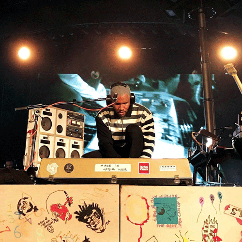

Provider
Memo finna start acting out if I don't see him soon
Yeah my best friend ain't backing out, it's still on sight, fool
I'm the only one out here on the night loops
I'm the only one out here on the night loops
Trophy case still light, body need a race stripe
And these minerals on my body break light
And these reds on my body brakelight
New man comin' up ahead on his own two
Is you a natural blondie like Goku?
Sleepin' on my belly in a loop like a serpent
Talking Heads ripplin' on the surface
[Pre-Chorus]
Eyes low, chin heavy, shoegazer
Moonwalkin', R.I.P. Stanley Kubrick
You had you some birthdays, could you prove it?
Show me the wisdom in your movement
Show me some wisdom in your movement
[Chorus]
Feelings you provide
Feelings you provide
I know it, I know it
The feelings I, the feelings, I know it, I
Feelings you provide
Feelings you provide
I know it, I know it
The feelings, I know it, the feelings, I, I
[Bridge]
Tonight I might change my life
If you lived like I live
You couldn't live without it
Said I'd be your new best friend
But what more? Yeah
Ain't too late to out
Ooh, ooh, ooh, ahhh
Provide, provide
Pro...
Ooh, oooh, oooh
Tonight I might change my life, all for you
All for you (Provide)
[Verse 2]
Provided, diamond lane that didn't exist
Packed the Astro van and brought my kids through
Prada tee on the eldest, throw the Gildan on the children
Hand-me-down fits
Chest pass, see mist off rotation (swish, swisha)